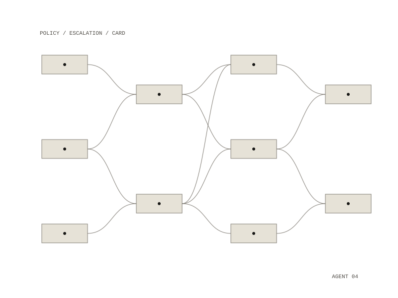

Human in the Loop
Human in the Loop is a design for a system that carries out scientific experiments and engineering workflows end to end, and hands a step to a person only when a physical, legal, financial or ethical constraint requires it. The design automates what is reversible and observable and escalates the rest.

Action classes
Every action was to be classified before it runs:
- AUTO: safe for the system to run on its own
- CONFIRM: needs explicit approval from a person
- HUMAN_ONLY: must be done by a person
- FORBIDDEN: must not be run
By default, banking, legal agreements, identity verification, purchases above a threshold, hardware and wet-lab work, production deployments and external communications are human-only.
Escalation requests
When a step needs a person, the system was designed to write a request in a fixed form: the task, why the system cannot go on, numbered steps, what it has already prepared, and what it will do once the step is done. Each request has to be readable in under two minutes, ask no open-ended questions and say what happens next.
Parts
- Orchestrator: the execution loop, state machine, retries and escalation
- Planner: turns a goal into a task graph with dependencies and checkpoints
- Executors: code, analysis and simulations
- Validator: checks outputs and finds inconsistencies
- Documentation: writes structured records
- Human interface: turns state into escalation requests
- Policy engine: classifies actions and blocks unsafe ones
- Memory: persistent, resumable state
Each task records its goal, status, dependencies, action class, whether it needs a person, its outputs, assumptions and risks, and every record is versioned, timestamped and linked. The planned build order was the policy engine, the task and state schema, the orchestrator loop, the escalation system, tool adapters, and then scenario tests.
Applied to PAOM
A second design applies the same approach to PAOM (Print All Over Me), the print-on-demand fashion marketplace Eon founded. In it, the system produces design variations and the designer supplies taste and approval. Design generation, colorway variants, print-readiness checks (resolution, bleed, color profile, repeat tile), listing copy, demand forecasts and pricing within a band the designer sets would run automatically. A new design ready for listing, a possible IP match, a quality dispute and a new product category go to a person, and custom text and partnership terms stay human-only. Each approval was designed as a single card showing the variant, the style it came from, a forecast and a price, with approve, edit and reject, and what happens after approval.
AUTO, CONFIRM, HUMAN_ONLY, FORBIDDEN
PAOM, a print-on-demand fashion marketplace